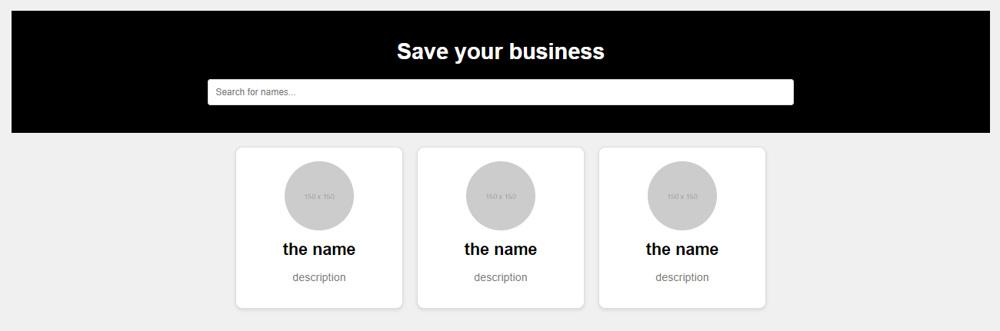

Qu'est-ce que VERICH ?
VERICH est une plateforme qui aide les entreprises à se protéger contre les chèques impayés. En raison de la nouvelle loi qui interdit l'emprisonnement pour les chèques inférieurs à 5 000 DT, de nombreuses entreprises sont en danger.
Avec VERICH, les entreprises peuvent ajouter ou retirer des noms d'une base de données de personnes avec des chèques impayés. Cette liste encourage fortement les clients à payer leurs chèques, car être sur cette liste peut entraîner des problèmes avec d'autres entreprises. Cela motive les clients à régler leurs chèques pour éviter des refus futurs.
De plus, de nombreuses entreprises comptent sur les paiements par chèque, car c'est une source importante de leurs profits. VERICH permet à ces entreprises de continuer à offrir ces facilités tout en minimisant les risques associés aux chèques impayés.
Avantages de VERICH
Réduction du Risque Financier
VERICH aide les entreprises à vérifier la fiabilité des clients avant d'accepter des chèques, réduisant ainsi le risque de non-paiement.
Base de Données Partagée
Les entreprises peuvent accéder à une base de données commune d'individus avec des chèques impayés, renforçant la vigilance collective et protégeant contre les mauvais payeurs.
Sécurité et Confiance
En utilisant VERICH, les entreprises peuvent renforcer la confiance dans les transactions par chèque, sachant qu'elles disposent d'une couche de sécurité supplémentaire.
Facilité d'Utilisation
La plateforme permet aux entreprises d'ajouter ou de retirer facilement des noms de la base de données, rendant la gestion des chèques impayés simple et efficace.
Protection des Profits
De nombreuses entreprises dépendent des facilités de paiement par chèque pour leurs profits. VERICH leur permet de continuer à offrir ces facilités tout en minimisant les risques de non-paiement.
Prévention des Fraudes
La peur d'être inscrit motive les clients à honorer leurs paiements, réduisant les cas de chèques impayés.
Amélioration de la Prise de Décision
Les entreprises peuvent prendre des décisions éclairées avant d'accepter des chèques, grâce aux informations fournies par VERICH.
Relations d'Affaires Améliorées
En réduisant les non-paiements, les entreprises peuvent maintenir de meilleures relations avec les clients et les fournisseurs, renforçant leur réputation.
Économies de Temps et de Ressources
La gestion proactive des risques de chèques impayés permet d'économiser du temps et de réduire les ressources nécessaires pour la récupération des créances.
Notre Mission
"Aider les entreprises à se garantir contre les chèques impayés en fournissant une solution simple pour vérifier la fiabilité des clients et garantir des transactions sûres et fiables."
Nos Offres
Mensuel
30 DT
- Accès complet à la base de données
- Chèques clients illimités
- Support client (ajout ou retrait d'individus)
Annuel
300 DT
- Accès complet à la base de données
- Chèques clients illimités
- Support client (ajout ou retrait d'individus)
- Réduction de 20%
* Pour vous abonner à notre plateforme, contactez-nous au : 93 218 896